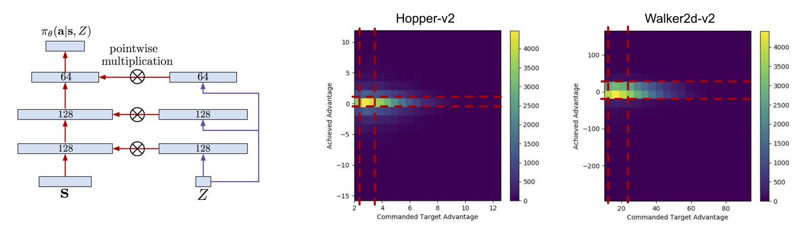

{{ page.title }}
arXiv Preprint 2019
Aviral Kumar Xue Bin Peng Sergey Levine
University of California, Berkeley

|
Abstract
Reinforcement learning offers the promise of automating the acquisition of complex
behavioral skills. However, compared to commonly used and well-understood supervised
learning methods, reinforcement learning algorithms can be brittle, difficult to use
and tune, and sensitive to seemingly innocuous implementation decisions. In contrast,
imitation learning utilizes standard and well-understood supervised learning methods,
but requires near-optimal expert data. Can we learn effective policies via supervised
learning without demonstrations? The main idea that we explore in this work is that
non-expert trajectories collected from sub-optimal policies can be viewed as optimal
supervision, not for maximizing the reward, but for matching the reward of the given
trajectory. By then conditioning the policy on the numerical value of the reward, we
can obtain a policy that generalizes to larger returns. We show how such an approach
can be derived as a principled method for policy search, discuss several variants,
and compare the method experimentally to a variety of current reinforcement learning
methods on standard benchmarks.
|
Paper: [PDF] Preprint: [arXiv]
|
Bibtex
@article{
RCPKumar19,
title={Reward-Conditioned Policies},
author={Kumar, Aviral and Peng, Xue Bin and Levine, Sergey},
journal={arXiv preprint arXiv:1912.13465},
year={2019}
}